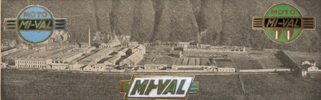
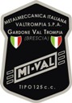
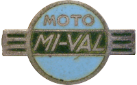
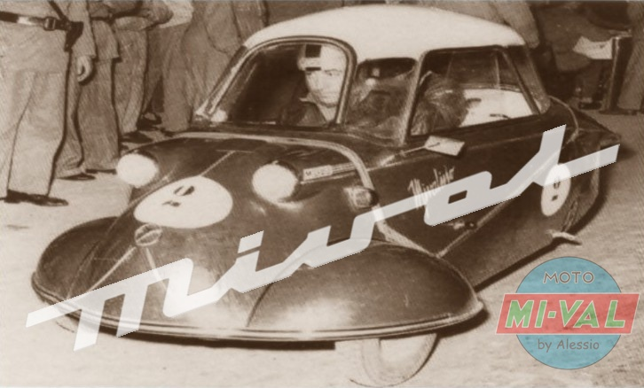
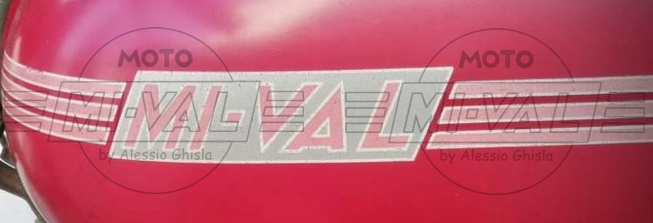

- 125 T
- 125 N
- 125 Nt
- 125 NS (Prima serie ?)
- 125 NS
- 125 GT
- 125
GT (Variante)
- 125 GS
- 125 S
- 125 SS
- 125 GSa
- 125 GSr
- 125 GL
- 125 GSS
- 125 N/55
- 125 Na
- 125 N/55 e Na - Varianti
- 125 M5L
- 125 4MT
- 125 4MT Lusso
- 125 6G "6 giorni"
- 125 6G Lusso
- 175 L
- 175 M5L
- 175 S (1953)
- 175 S/30 (1954)
- 175 S/30 (1955)
- 175 S/4T
- 200 TV
- 200 Principe
- 125 Regolarità
- 125 Bialbero
- 175 Bialbero
- 360/400 Cross
- "Mivalino"
- Motocarro 48 "Valletto"
- Motocarro 150
- Motocarro 175
- Ciclomotori
Curiosità
|  |
Perchè questo sito dedicato alle moto MI-VAL?
Il primo motivo è che sono nato a Gardone Val Trompia (sede della fabbrica), sono un motociclista, e sono appassionato di moto d'epoca, quindi vado fiero di un prodotto della mia Valle. Il secondo motivo è che mio nonno materno ha lavorato per oltre 30 anni in questa azienda, ed è stato un felice possessore di diversi modelli. L'ultimo, un 200 Principe perfettamente conservato grazie alle cure con cui il nonno ha mantenuto il suo mezzo, rappresenta attualmente il "pezzo" forte della mia collezione. In casa mia quindi si è sempre parlato di MI-VAL, e quando ho compiuto 14 anni, mio padre, invece di comprarmi il "fifty" o il "cobra" (ciclomotori allora di moda), mi ha sistemato il vecchio “mivalino” 48 cc 4 marce di mio zio, col quale ho cominciato la mia esperienza motociclistica.
BREVE STORIA DELLA MI-VAL
La MI-VAL nasce nel 1950 a Gardone Val Trompia ad opera del bolognese Ettore Minganti e altri soci, tra cui la fabbrica d'armi Pietro Beretta (inizialmente il marchio significa MInganti VALtrompia, successivamente Metalmeccanica Italiana VALtrompia). Il primo modello prodotto (125 T) si ispira alla tedesca DKW RT 125, sia nel propulsore che nella ciclistica. I modelli a 2 tempi che negli anni successivi affiancano il modello T, ad esclusione del "6 Giorni", sono essenzialmente una evoluzione estetica del modello iniziale. Le moto MI-VAL furono tra le più diffuse degli anni 50, grazie alla loro fama di essere economiche e robuste, tuttavia in alcuni modelli si cercarono delle soluzioni stilistiche più raffinate al fine di soddisfare anche i motociclisti più esigenti.Negli anni successivi furono realizzati anche modelli a 4 tempi, a 4 e 5 marce, nelle cilindrate di 125, 175 e 200 cc, che però non ebbero la diffusione delle famose 125. Famoso è anche il "Mivalino" 175, un tre ruote cabinato costruito su licenza della Messerschmitt. In catalogo è riportato anche un motofurgone di 175 cc. Da ricordare inoltre la produzione di numerosi modelli di ciclomotori a 2 tempi 48 cc. La morte di Minganti e la crisi nel settore motociclistico portarono la MI-VAL ad abbandonare progressivamente la produzione di motocicli. L'azienda entrò maggiormente nella sfera Beretta, e quindi cominciò a compartecipare alla produzione armiera oltre a quella di macchine utensili. Negli anni 90 il settore delle macchine utensili e il marchio sono stati ceduti dalla Beretta, e la scritte MI-VAL sono scomparse dai muri della fabbrica di Gardone Val Trompia.
Vai alla Home Page di Alessio Ghisla
| Aprile 2023 Negli ultimi anni sto assistendo ad un interesse crescente nei confronti delle moto MI-VAL. La cosa ovviamente mi fa molto piacere. Purtroppo ho constato che molte persone, per poter rimettere in strada il proprio mezzo, ricorrono a targhe e documenti di altri modelli che si possono recuperare abbastanza facilmente ai vari mercatini o nei siti di annunci on-line, adeguando opportunamente i numeri di telaio del proprio mezzo. Questa operazione, oltre a essere illecita, crea un danno storico, perché nella maggior parte delle volte i numeri di telaio utilizzati appartengono a moto di modelli ed epoche differenti, creando maggiore confusione in una situazione già poco chiara. Da oltre 20 anni catalogo ogni esemplare che incontro e un'idea me la sono fatta. Tra i vari orrori che ho potuto vedere: un 125 T del 1951 e un 125 N del 1952 entrambe con i documenti di 125 NS del 1954 oppure un bel GS conservato del 1954 con i documento di un 125 N55... Spesso le falsificazioni dei numeri di telaio/motore/scudetto sono talmente malfatte che anche una persona poco esperta potrebbe notarla... Spero che prima o poi, a livello FMI e ASI, si cominci ad identificare meglio queste distorsioni, oltre al fatto che la burocrazia dovrebbe consentire la rimessa in strada di moto di lecita provenienza prive di documenti. Non sarà come avere una moto con la targa originale ma almeno si faranno le cose lecitamente e senza alterare la storia. |

- Documentazione
- Bibliografia
- Stampa
- Contachilometri
- Decalcomanie
- Selle
- Tappi
- Prototipi
- Mercatino
- Varie
Le competizioni
 |
 |
 |
Le
mia collezione
Le
MI-VAL dei visitatori
Se vuoi inserire le foto del tuo motociclo o ciclomotore su questo sito mandami una e-mail!

